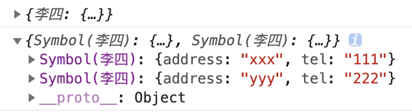

每个 Symbol 都是独一无二的。
一、声明方式
1）Symbol()
1 | let s1 = Symbol() |
这种方式声明的两个 symbol 并不相等。每次使用 Symbol() 时，都会生成一个新的 Symbol。我们还可以给 symbol 传入字符串：
1 | let s3 = Symbol('foo') |
如果给 symbol 传入对象，则会调用该对象的 toString() 方法：
1 | const obj = { |
Symbol 并不是对象，因此并不能给 Symbol 添加属性；Symbol 也不是构造函数，不能在 Symbol 前面添加 new 操作符。Symbol 有一个 API description，可以查看 Symbol 的描述：
1 | let s1 = Symbol() |
2）Symbol.for()
1 | let s1 = Symbol.for('foo') |
使用 Symbol.for() 生成的 Symbol 也是独一无二的，上述示例是多个变量指向同一个 Symbol。因为这种声明方式是在全局的环境中声明 Symbol。上述示例中，当我们再次声明 Symbol.for(‘foo’) 时并赋值给 s2 时，它会去全局的环境中找是否已经存在描述为 foo 的 Symbol，如果有的话就将它赋值给 s2。因此 s1 和 s2 是同一个 Symbol。而使用 Symbol() 时，每次都会生成一个新的 Symbol，它并不会在全局环境下查找、声明。
无论是否在全局作用域下，以 Symbol.for() 声明的 Symbol 都是存在于全局环境下的。
1 | function foo() { |
我们可以通过Symbol.keyFor()返回已经在全局环境下登记的 Symbol 的描述。
1 | const s1 = Symbol('foo') |
二、应用场景
我们定义一个对象表示班级，班级里是可能会出现同名的两个人的：
1 | const grade = { |
这样输出的 grade 里只会有第二个李四，因为属性名相同时后面的会把前面的覆盖。我们之前讲过，是可以使用变量来当做属性名的：
1 | const stu1 = '李四' |
这样生成的 grade 里也只有第二个李四。因为他们的属性名依旧都是李四。这个时候我们就可以使用 symbol，因为每个 Symbol 都是独一无二的。
1 | const stu1 = Symbol('李四') |
grade 输出结果如下：
三、对象中 Symbol 属性的遍历
使用for in、Object.keys()方法遍历不到 Symbol 属性。
1 | const sym = Symbol('age') |
但是我们可以通过Object.getOwnPropertySymbols()方法遍历出 Symbol 属性，这个方法只能遍历 Symbol 属性。
1 | for(let key of Object.getOwnPropertySymbols(user)){ |
我们可以通过Reflect.ownKeys()方法同时遍历出普通属性和 Symbol 属性。
1 | for (let key of Reflect.ownKeys(user)) { |

Litchi
怕什么真理无穷，进一寸有一寸的欢喜